HuedDesigned and built · 12 min read
One colour a day, found in the real world and scored on your phone.
Hued is a phone app I designed and built on my own. Everyone gets the same colour each day, goes out to find it, and the phone scores how well the photo caught it.
- Role
- Design and build, solo
- Why
- A brief I set myself: a small daily reason to look closely, free to run
- Timeline
- 25 June to 12 July 2026, 35 commits
- Platform
- Android app, with a separate web admin panel
- Stack
- Expo, React Native, TypeScript, Supabase
- Status
- Beta, shared as an Android download. No usage numbers to share

In short
- The problem: I wanted a small daily reason to look closely at the world. It had to be the same for everyone and cost almost nothing to run.
- What I built: an Android app where the daily colour and each photo's score are worked out on the phone. A free-plan server keeps posts, friends, groups and standings.
- The key idea: be generous about colour and strict about cheating. I made the colour match more forgiving and left the cheat checks alone.
- Where it stands: a beta, built in 18 days. There is no user research behind it and I have no usage numbers to share.
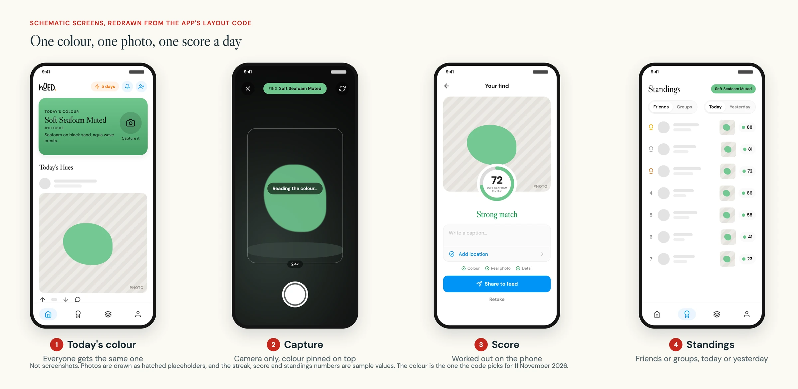
01 Why I built it
A small daily prompt that costs almost nothing to run
Hued started from a brief I set myself. Give everyone one colour a day. They go out, find it in the real world and take a photo. The app scores how well they caught it, and they compare with friends.
I added a cost rule. It had to run on free plans. So anything that would cost money for every photo, such as working out a score, happens on the phone. The server only keeps the record.
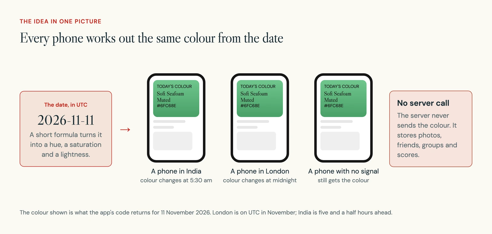
02 How it works
One colour, one photo, one place in the standings
The app has four tabs: Home, Standings, Groups and Profile. The daily loop runs through the first two.
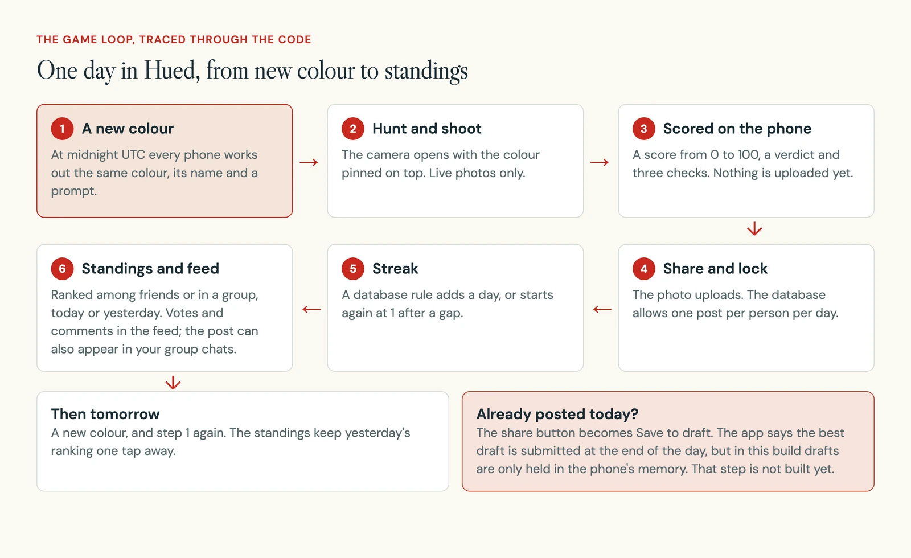
A streak counts the days in a row you have posted. The database keeps it, with a rule that runs each time a post is saved.
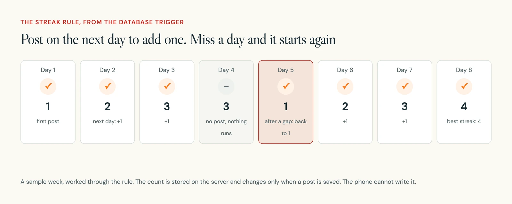
Around the loop sit the social parts: following people, a feed of the day's photos from people you follow, groups with their own chat and standings, a calendar of past finds and an activity inbox.
03 Decision 1
The colour is made from the date, and leans toward colours you can find
What you see: Home opens on the day's colour, with its name, its hex code and a short prompt about where it might be found.
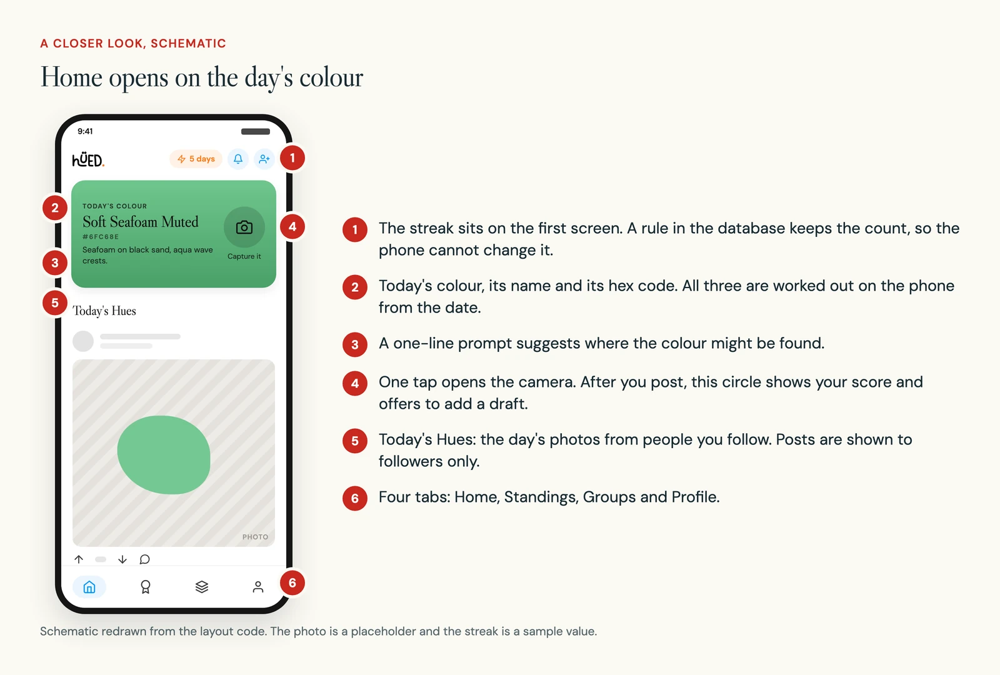
In the build: the daily colour changed four times in eleven days. I started with 48 hand-picked colours, each with a name and a prompt. The next day I grew the list to 137. Ten minutes later I replaced the list with a formula.
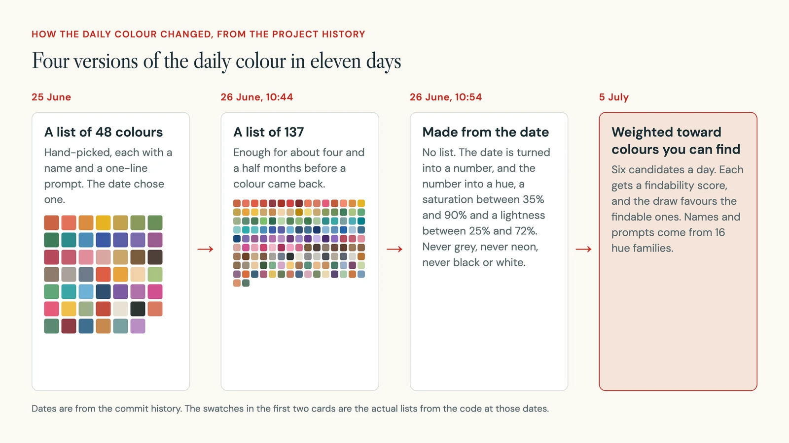
The formula turns the date into a number, and the number into a hue, a saturation and a lightness. Limits keep out grey, neon, black and white. Every phone gets the same answer, offline.
But the formula treated every hue the same. About one day in six it picked a colour that is hard to find outside, such as cyan, chartreuse or magenta. On 5 July I gave every colour a findability score.
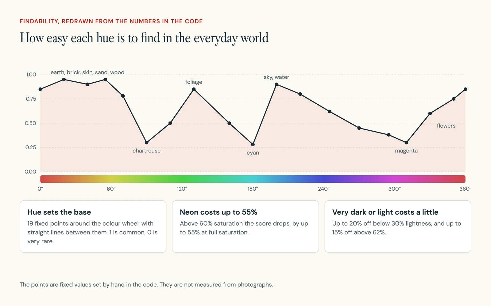
Now the code draws six candidates a day and holds a lottery. Each candidate's chance is its findability cubed, so common colours win most days, but not every day.
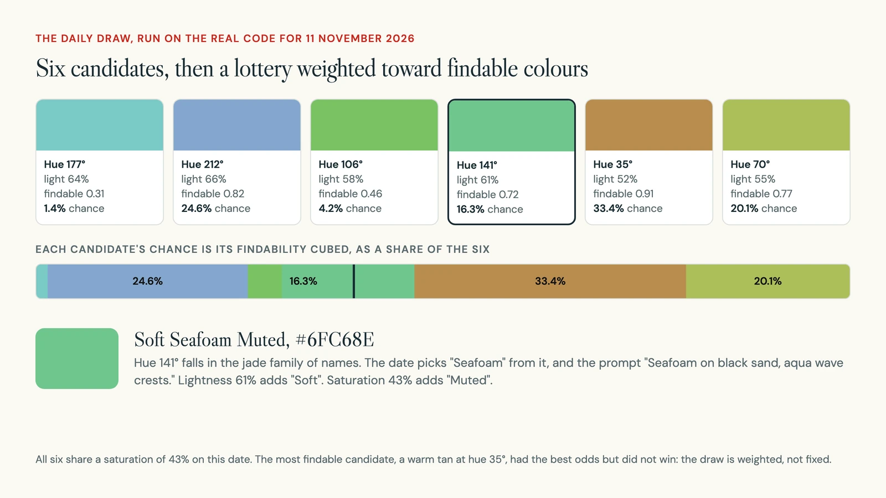
- 3.3%
- of days get a rare colour now, over every date from 2026 to 2035
- 17.1%
- of days would, if the first candidate always won
- 0.35
- findability, the line I used here for "rare"
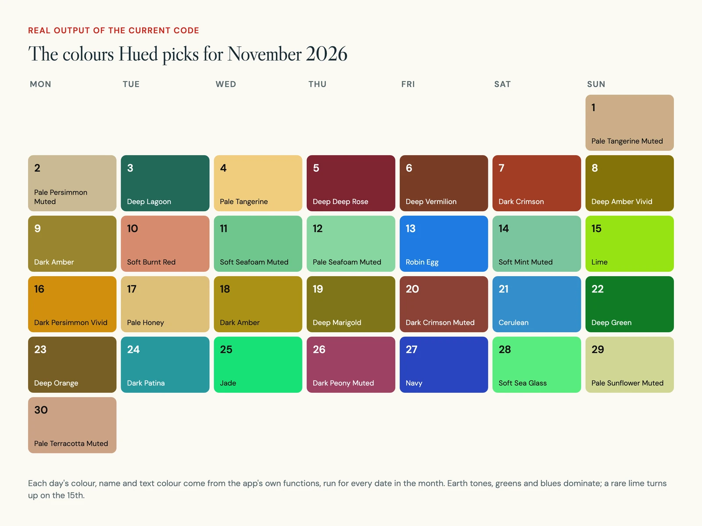
Rare colours did not go away. When one is the target, scoring needs less of it in the frame, so finding a small patch still counts.
04 Decision 2
The score is worked out on the phone, so a photo costs the server nothing
What you see: the camera opens with the target colour pinned on top. There is a shutter and nothing else, because Hued takes live photos only.
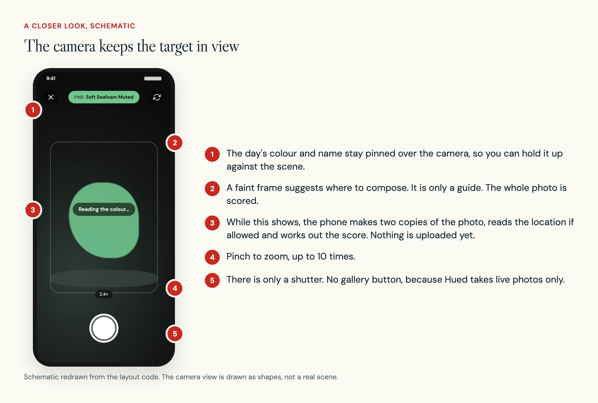
In the build: when you press the shutter, the phone makes two copies of the photo. A tiny one, 64 by 64 pixels, is used for scoring and never leaves the phone. A larger one waits until you share.
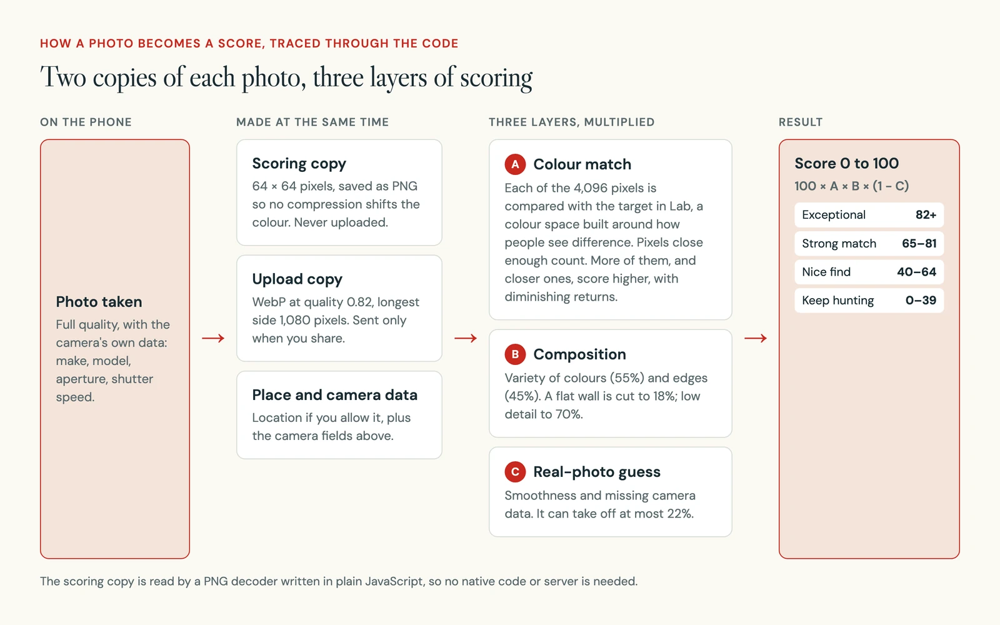
The colour match uses Lab, a way of describing colour where equal distances look about equally different to people. A pixel counts as the colour if it is within 34 Lab units of the target.
The upload copy is WebP at quality 0.82, no more than 1,080 pixels on its longest side. That keeps each photo to roughly 100 to 200 KB, so the free 1 GB of storage holds thousands of them.
05 Decision 3
Generous about colour, strict about cheating
What you see: the result screen leads with the score ring, drawn in the day's colour, and a one or two word verdict. Caption, location and sharing come after.
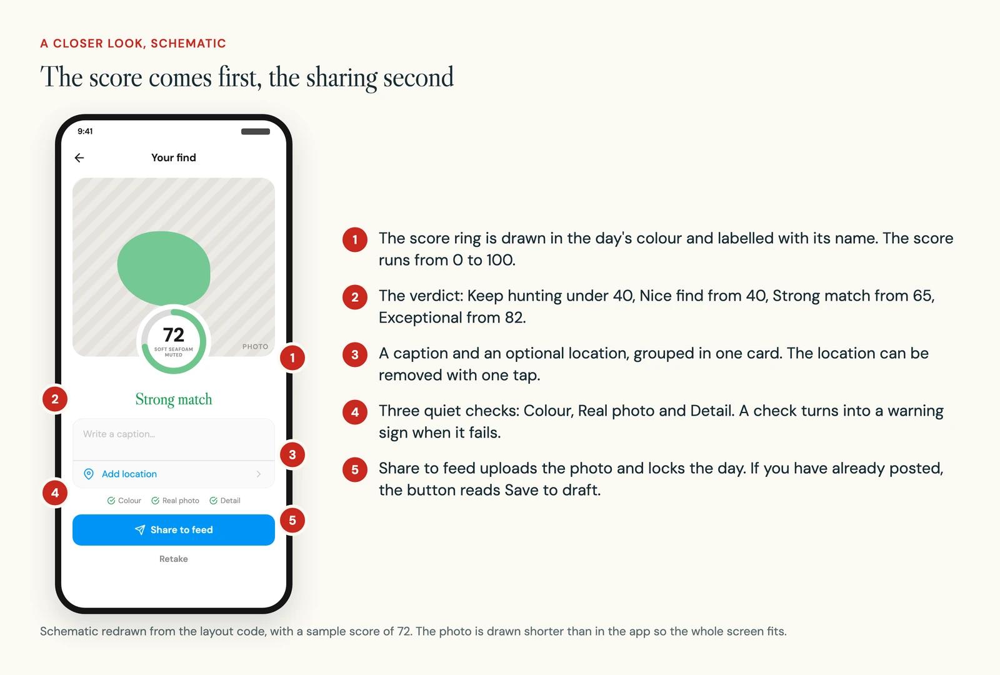
In the build: real colour rarely matches a target exactly. Light, shadow and the camera's white balance all shift it. On 3 July I widened the match, gave more credit for a close but imperfect colour, and lowered the verdict bands.
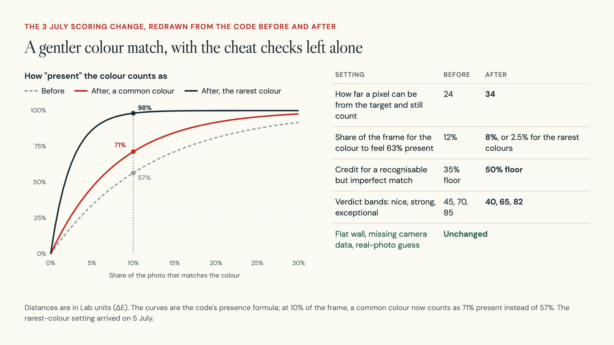
The cheat checks run in a fixed order. Some stop a photo outright. Others only lower the score and show a note.
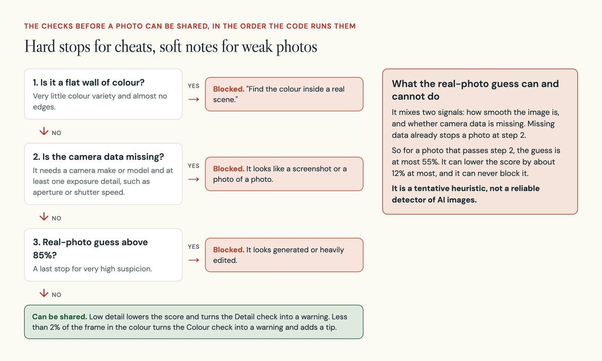
06 Decision 4
A quiet interface, so the day's colour is the loudest thing on screen
What you see: white, greys, one blue for actions and orange for streaks. The only other colour is the day's, on the Home card, the camera chip, the score ring and the standings tag.
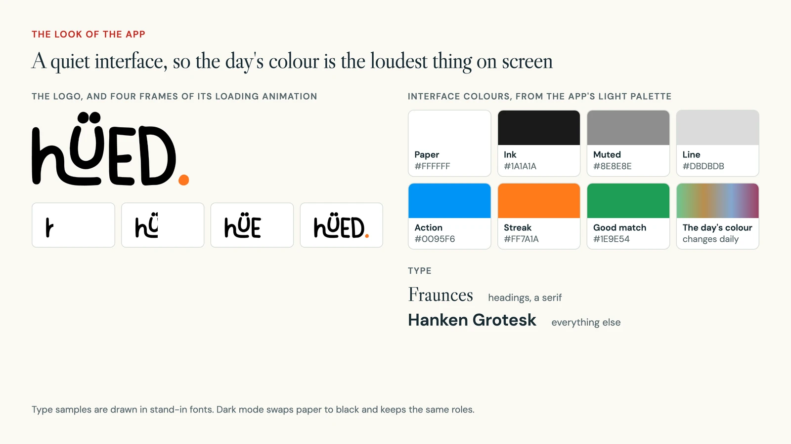
In the build: the light and dark palettes use the same name for each role, so every screen switches with one setting. Text on the day's colour turns dark or white depending on how bright the colour is, so the name stays readable whatever the date brings.
On 3 July I also gave shared parts and every icon-only button a role and a spoken label, including back, close, flip camera and the shutter. The capture button, for example, is read out as "Capture today's colour" followed by the colour's name.
07 The build
The phone does the costly work; the database holds the rules
The phone works out the colour, the score and the compressed photo. The server keeps posts, people and standings, and the rules about who can see and change what live in the database itself.
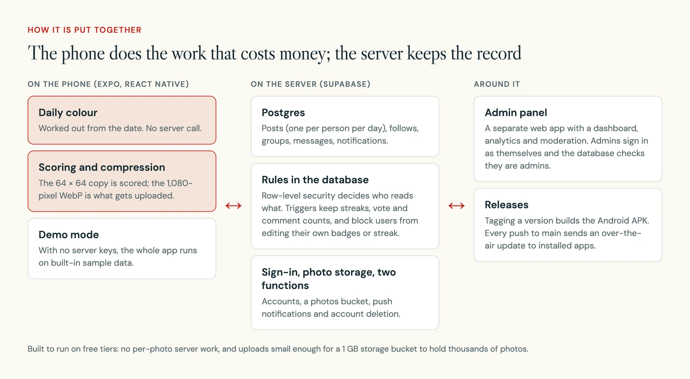
| Part | What I used |
|---|---|
| App | Expo SDK 51, React Native, TypeScript |
| Camera, place and alerts | Expo camera, location and notifications |
| Server | Supabase: Postgres, sign-in, photo storage and two server functions |
| Admin panel | A separate Vite web app with charts |
| Releases | GitHub Actions builds the Android app; Expo updates reach installed apps over the air |
- 35
- commits in 18 days
- 20
- screens in the app
- 53
- written test cases, 19 of them must-pass
- 7
- admin screens besides sign-in
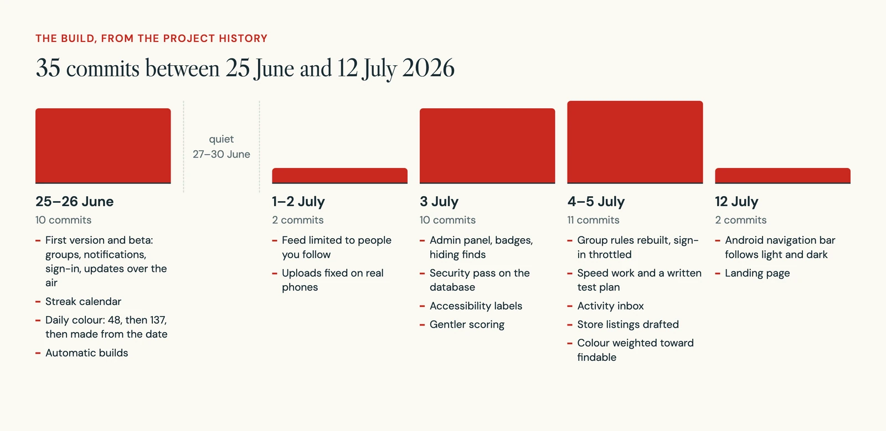
The hardest problems were not on the screens people see.
| Area | What went wrong, and what I changed |
|---|---|
| Photos | On Android the camera reports the photo's size before it is turned upright. Resizing to that width and height squashed portrait photos. Now only one side is set and the other follows. |
| Sign-in | People were signed out every hour or two. The phone pauses timers in the background, so the sign-in token missed its refresh and was cancelled. Refreshing now starts when the app comes back to the front. |
| Groups | The rules for groups and members referred to each other, and the database stopped with an endless loop. I rewrote them in one file with helper functions and marked nine older scripts as not to be run. |
| Security | A pass found tables that anyone could read and a lookup that revealed people's emails. I turned the rules on, removed the lookup and locked an account for 15 minutes after 8 wrong passwords. |
There are no automated tests on the scoring or the daily colour. The checks that exist are type checking and a written test plan of 53 cases for the feed, group chat, profile grid, capture and admin panel.
08 Where it stands
A beta on Android, with no usage numbers to share
Hued is a beta. The Android app is shared as a download, and updates reach installed apps over the air. Store listings and privacy answers for the App Store and Google Play are written, and a landing page was built on 12 July.
The admin panel has a dashboard and analytics, but I am not sharing numbers from it here. I have no user counts, retention figures or feedback notes to report. These are also not there yet:
- Drafts. The app says your best draft is submitted at the end of the day, but drafts are only held in the phone's memory and nothing submits them.
- Real screenshots of the main loop. This page uses schematics redrawn from the code.
- A run of the written test plan on a real phone. Its own notes say the phone cases still needed an emulator and a device.
09 What is next
Make the promises on screen true, then test with people
- Build the end-of-day draft step, or take the promise off the screen.
- Add a sanity check on the server for scores, and automated tests for the scoring and the daily colour.
- Fix two quirks in the daily draw. On about nine days in ten the six candidates share one saturation, because of how the number from the date spreads its bits. And names can double up: 5 November 2026 is "Deep Deep Rose".
- Show when the day changes in each person's own time.
- Ask players how they read a low score, especially in poor light, before making the competitive parts more prominent.
10 What I learned
Fairness is a design problem as much as a maths one
The colour list lasted a day. A formula gave endless variety, but it had no sense of what people can actually find. The fix was one number per colour, findability, used twice: to choose the colour and to score it.
I also learned to split generous from strict. A score that feels unfair for an honest photo makes the game feel broken, so the colour match got gentler. A cheat that works makes the standings worthless, so those checks stayed fixed.
And a check should be described by what it can really do. On a photo with camera data, the real-photo guess can never block anything, so I call it a guess.
An event page is only the beginning.